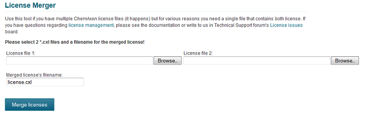

Since the default licenses are stored in a single file named license.cxl located in the user's home directory,
it is sometimes necessary to merge license files to a single file.
Let's see this typical example: The user has an Annual license file, and starts evaluating another product. In this case the
user receives another license file containing the evaluation licenses.
In this case the user simply installs the new license file, and it is automatically merged with the existing license file.
However if this user uses the products on a server or is a reseller, the Desktop installation is not suitable.
License files can be merged with the license command line script.
Usage:
license -m source_license_file1.cxl
source_license_file2.cxl
result_license_file.cxl
Online license merging is available at: http://www.chemaxon.com/my-chemaxon/license-merger/
license.cxl, because
it is the default name of the automatically recognized license file.Warning: Manual merging of the license files can destroy them, be cautious with this method, and always create a backup first.
The reason of this warning is due to potential encoding problems some text editors may cause. The license files are distibuted in UTF-8 encoding, and this is specified in the license file itself. Some of the text editors are unable to save the license file with UTF-8 encoding, but they use a different encoding, e.g. UTF-16, however they do not change the UTF-8 specification in the license file.
For manual merging, Notepad, or other UTF-8 compliant text editor is suggested.
Encoding problems were experienced with WordPad.
Manual editing the license files is otherwise straightforward if you are familiar with XML files.
Structure of a license file:
<?xml version="1.0" encoding="UTF-8"?>
<!--PLEASE DO NOT MODIFY THIS FILE AND BE AWARE THAT THE FILE CONTAINS CONFIDENTIAL INFORMATION.-->
<ChemAxon>
<License>
</License>
<License>
</License>
</ChemAxon>
Copy whole <License> blocks from one license file, and paste them in another license file, inside the <ChemAxon> block.